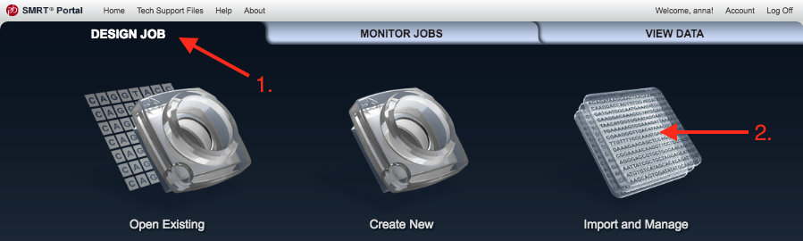
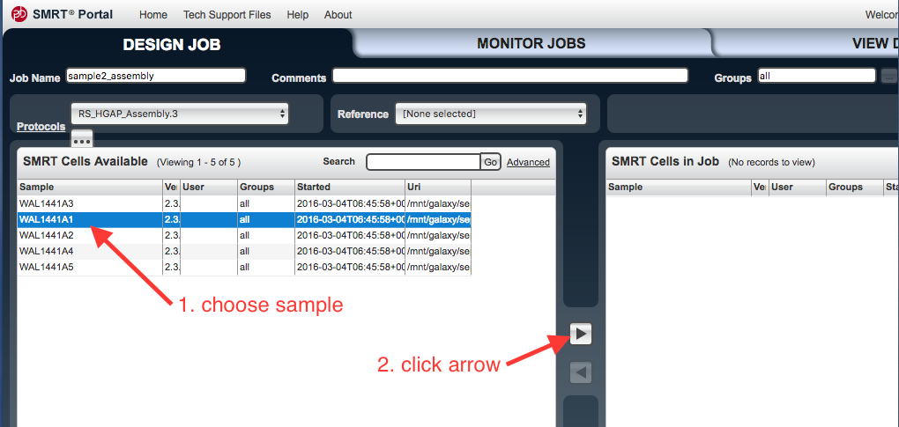
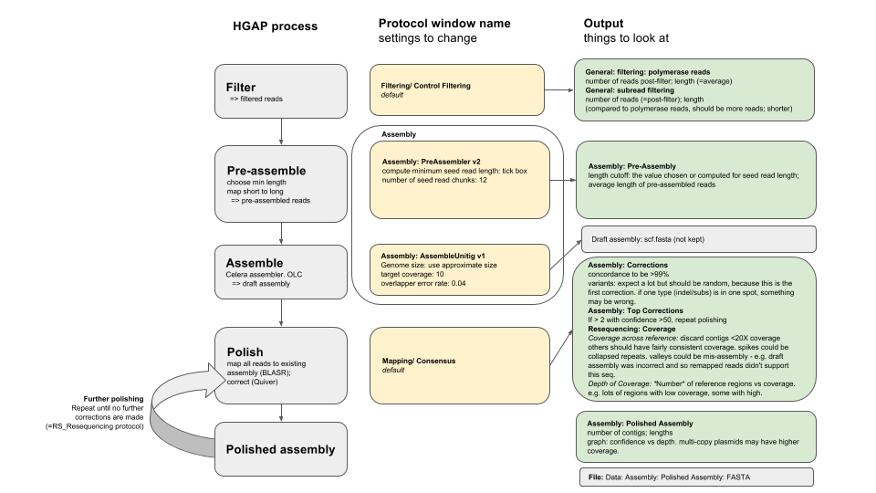
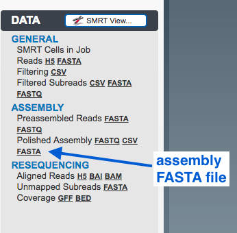

Assembly with PacBio data and SMRT Portal
Keywords: de novo assembly, PacBio, PacificBiosciences, HGAP, SMRT Portal, Microbial Genomics Virtual Laboratory
This tutorial will show you how to assemble a bacterial genome de novo, using the PacBio SMRT Portal on the mGVL. We will use an analysis pipeline called HGAP, the Hierarchical Genome Assembly Process.
Start
- Open your mGVL dashboard.
- You should see SMRT Portal as one of the instance services on your GVL dashboard.
- Open up the SMRT portal web link (to the right) and register/log on.
Input
We will use a dataset from a Streptococcus pyogenes bacteria.
If this has already been loaded onto SMRT portal (e.g. for use during a workshop), proceed to the next step (“Assembly”).
Otherwise:
- Load the PacBio data (your own, or the training dataset) onto your GVL.
- In the SMRT Portal, go to
Design Job , the top left tab. - Go to
Import and Manage .  - Click
Import SMRT cells .
-
Work out where you put the data on your GVL, and make sure the file path is showing.
- If not, click
Add and enter the file path to the data. - A SMRT cell is the collection of data from a particular cell in the machine. It includes .bax.h5 files.
- If not, click
-
Click on the file path and then
Scan to check for new data.
Assembly
HGAP process overview
We will use the Hierarchical Genome Assembly Process (HGAP). This flowchart shows the steps in the process:

Set up job
- In the SMRT Portal, go to the top left tab,
Design Job . - Go to
Create New . - An
Analysis window should appear. Tick all the boxes, thenNext . - Under
Job Name enter a name. - To the right, under
Groups choose all. - Under
Protocols chooseRS_HGAP_Assembly.3 . - There is an ellipsis underneath
Protocols - click on the ellipsis.

This brings up the settings. Click on
-
For
Compute Minimum Seed Read Length : ensure box is ticked -
For
Number of Seed Read Chunks : enter 12 - Change the
Genome Size to an approximately correct size for the species. For S. pyogenes, enter 1800000. - For
Target Coverage : enter 10 - For
Overlapper Error Rate : enter 0.04 - Leave all other settings as they are.
- Click
Apply
Your protocol window should look like this:

-
Click
Ok . -
In the
SMRT Cells Available window, select the file to be used. Click on the arrow to transfer these files to the SMRT Cells in Job window. - You can drag the column widths of the “Url” column so that you can see the URLs of the file paths better.

- Click
Save (bottom right hand side). - Next to
Save , clickStart . - The
Monitor Jobs window should open.- As each step proceeds, new items will appear under the
Reports andData tabs on the left.
- As each step proceeds, new items will appear under the

Inputs and Outputs
The connections between the names of assembly stages and outputs is not always clear. This flowchart shows how each stage of the HGAP process corresponds to protocol window names and outputs:

Results
If the job is still running, click on the centre tab
- Double click on the job name to open its reports.
- Click on different
Reports in the left hand panel.
Things to look at:
General: Filtering (polymerase reads)
- number of reads post-filter
- read length (=average)

General: Subread Filtering (subreads)
- number of reads post-filter
- read length (average)

Assembly: Pre-Assembly (pre-assembled reads)
- length cutoff (the computed minimum seed read length)
- read length (average)

Assembly: Corrections
Consensus calling results:
- Consensus concordance should be > 99%.
Graph: corrections across reference:
- With the first run of polishing, we expect a lot of corrections but they should be randomly distributed.

Note: only unitigs 0 and 1 shown.
Assembly: Top Corrections
This is a list of all the corrections made.

Note: only first 15 shown.
Resequencing: Coverage
Coverage across reference:
- discard contigs <20X coverage
- others should have fairly consistent coverage.
- spikes could be collapsed repeats.
- valleys could be mis-assembly - e.g. draft assembly was incorrect and so remapped reads didn’t support this part of the assembly.

Note: only unitigs 0 and 1 shown.
Graph: Depth of Coverage:
The is the number of reference regions vs. coverage.

Assembly: Polished Assembly
- Number of contigs
- Max contig length
- Graph: confidence vs depth. Multi-copy plasmids may have higher coverage.

Output
The polished assembly as a FASTA file.

- download to local computer; or
- open file in (GVL) Galaxy; or
- open file in GVL command line and perform further analysis.
Next
Further options:
-
Circularise the contigs; e.g. with Circlator.
-
Polish the assembly using Illumina data; e.g. with Pilon.
-
Annotate the polished assembly; e.g. with Prokka.
Links to more information
A full ist of reports and terminology